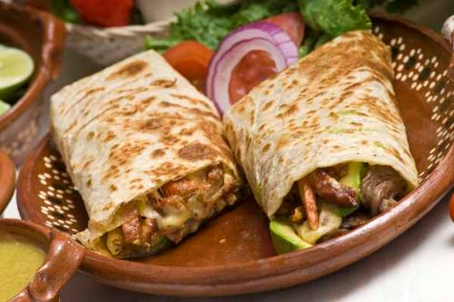

Burritos!

Description
Mouth-watering golden brown flour tortilla burritos! Very customizable for all preferences
It is high in protein, portable, quick to prepare and delicious!
Ingredients
- Flour toritlla
- Skirt steak
- Bell peppers
- Onions
- Sour cream
- Guacamole
- Beans
- Rice
- Spices (Your preferable spices)
Steps
- Prepare your ingredients by cutting the onions, bell peppers and skirt steak into pieces that fit in the skillet.
- Placed your seasoned skirt steak into the skillet on high heat, cook for 3 minutes on each side.
- Take skirt steak out and allow to rest
- On the same pan with the remains of the skirt steak browning sautee your onions and bell peppers with salt.
- While your veggies cook, heat up your flour tortilla.
- Take out your veggies and place on a container along with your steak after slicing against the grain.
- Now you are ready to assemble, with all your ingredients start in this order: beans, rice, steak, veggies, sour cream and at last guacamole.
- Roll and enjoy!
Back to Menu